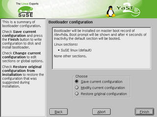
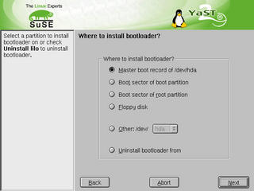
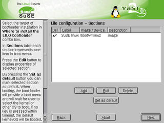
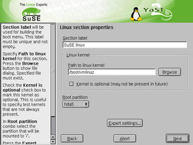
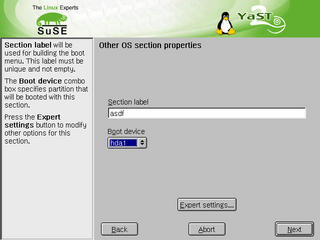
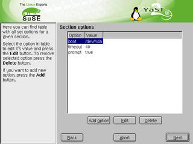
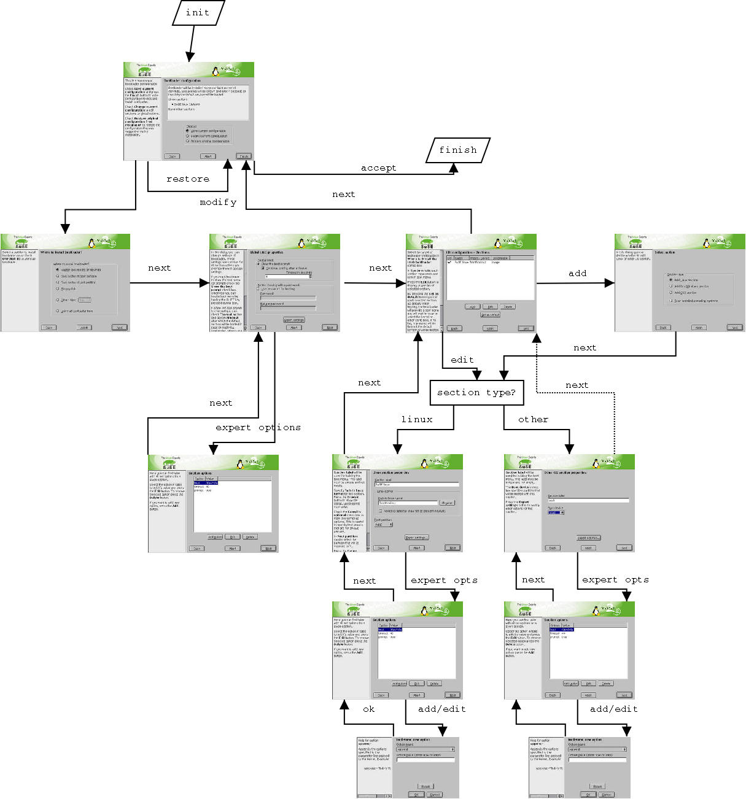

More information on bootloading: Operating systems Multiple OS's booting strategies Linux destribution names and version Supported bootloaders lodader conf.file platforms ======================================= lilo /etc/lilo.conf i386, ppc silo /etc/silo.conf sparc64 elilo /boot/elilo.conf ia64 Bootloader module functionality *) add/edit/remove lilo sections in ui. *) install LILO to mbr/bootsector/floppy *) uninstall LILO this module takes over functionality of yast1 bootloader configuration.
Config summary viewer

A partitioner-like config viewer. User can select
to save (accept) config, modify config and restore original
config from installation (this will overtake the functionality of
y2c_bootloader module from YCC)
{kind=link}
Action selector
 Shown when 'modify' radiobutton was checked.
Asks user, what does she want to change.
Shown when 'modify' radiobutton was checked.
Asks user, what does she want to change.
Installation target selector

asks for partition to install bootloader on.
{kind=link}
Section viewer (main window)

1) sections viewing/creating/modifying.
2) marking section as default
{kind=link}
new section type selector new section a) specifying section type: image/other

image section options  1) label 2) root device (partition that will be mounted as root after boot) 3) optional checkbox- kernel is optional (may not be present in future) 4) path to image / device name 5) list of all options accessed by 'options' button
other section options  1) section label 2) boot device (partition) 3) list of all options accessed by 'options' button
detailed options for section

options for section
values are changed via 'Edit' button.
dialog for adding and editing is the same.
{kind=link}
option value editor
 reset button sets brings back the value to the state
it was before before calling *options* dialog, not the
value editor.
help for currently selected option is shown on the left
reset button sets brings back the value to the state
it was before before calling *options* dialog, not the
value editor.
help for currently selected option is shown on the left
global lilo options
 global options for lilo (common for all section if not overriden there)
1) show prompt automatically / on demand
2) timeout
3) password
5) all option accessible by 'options' button
3) combo with installation target (mbr, root partition, boot partition. floppy, uninstall)
global options for lilo (common for all section if not overriden there)
1) show prompt automatically / on demand
2) timeout
3) password
5) all option accessible by 'options' button
3) combo with installation target (mbr, root partition, boot partition. floppy, uninstall)
Wizard sequence 